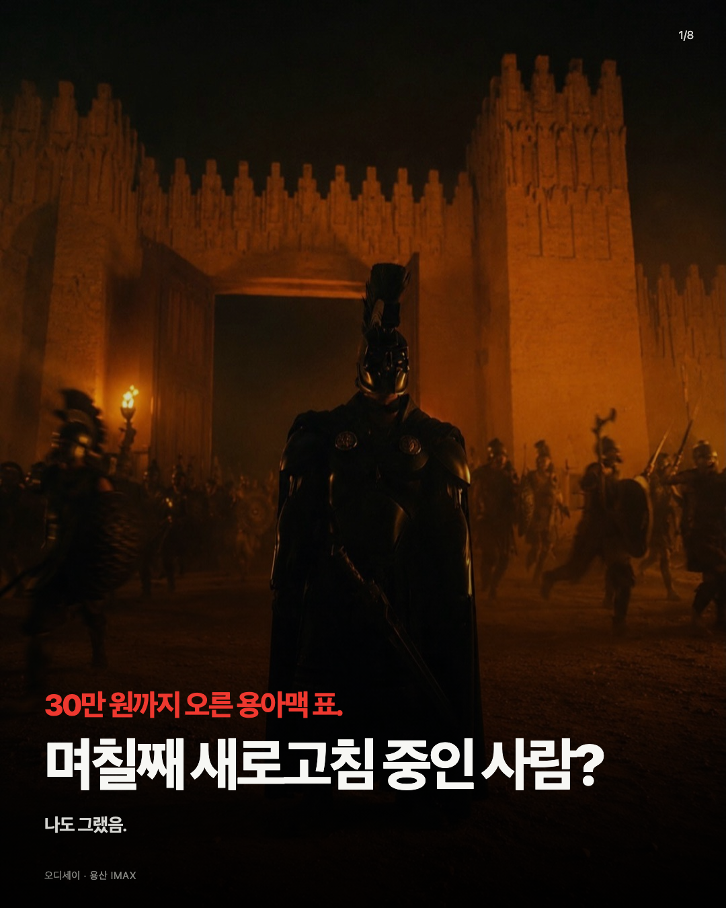

BEFORE현재 표지

PROPOSED가격 강조형 표지
 1/8
1/8
30만 원까지 오른 용아맥 표.
며칠째 새로고침 중인 사람?
나도 그랬음.
오디세이 · 용산 IMAX배경기존 스틸 유지
가격 문구빨간색 44px
질문흰색 86px
추가 이미지사용하지 않음
의도
첫 시선에는 `30만 원`이 들어오고, 바로 아래 큰 질문이 페르소나를 호출한다. 뉴스 화면을 추가하지 않아 영화의 웅장함과 기존 캐러셀의 시네마틱 톤을 유지한다.